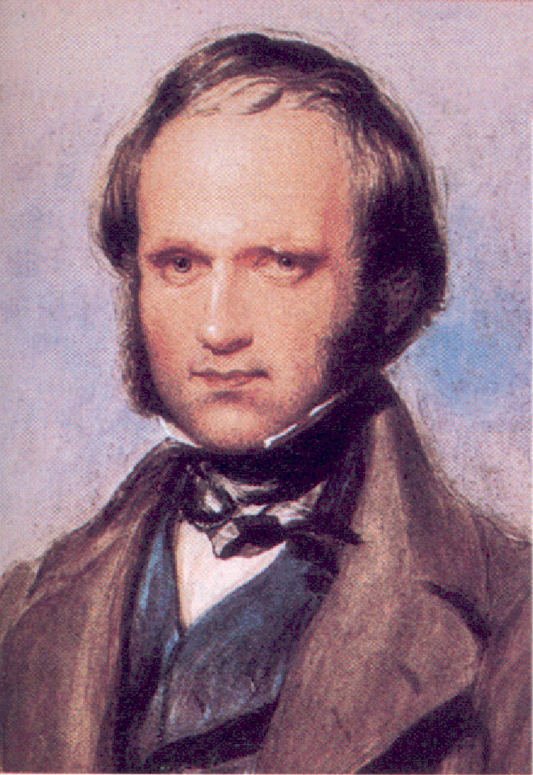
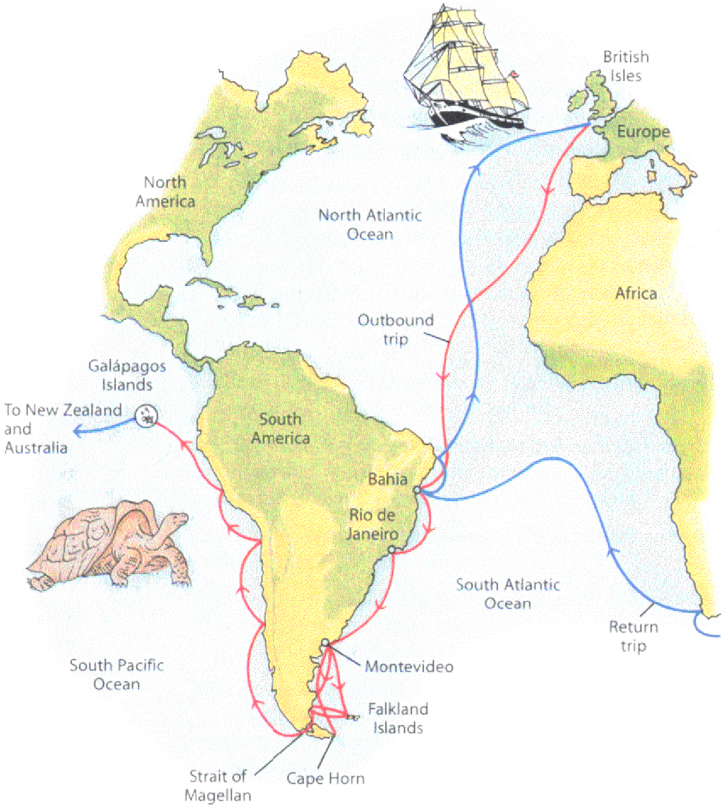
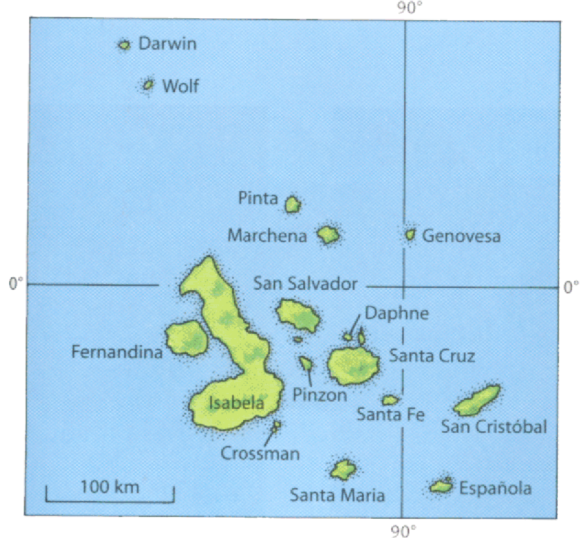
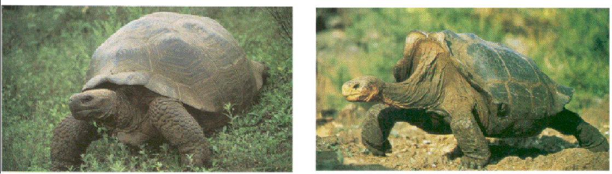
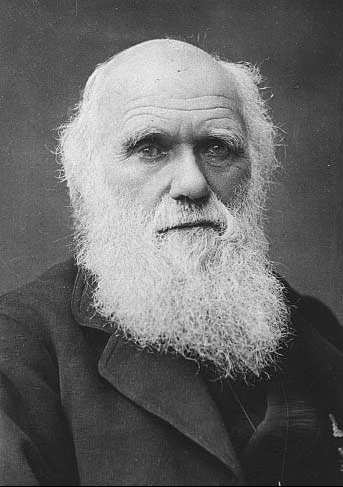
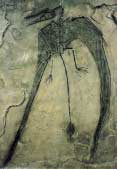
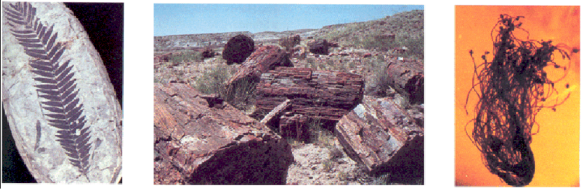
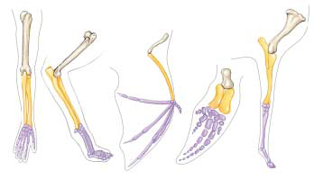
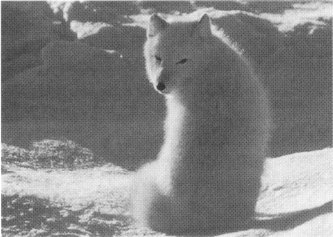
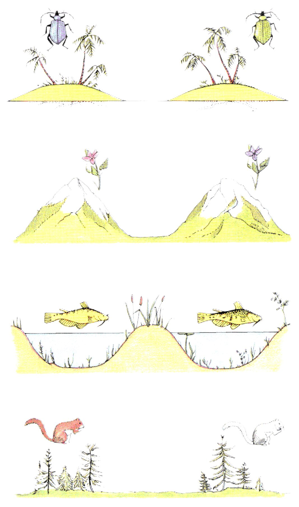

La evolución
Una
pregunta fundamental dentro del pensamiento humano de todos los tiempos
es ¿de
donde venimos?, desde siempre los seres humanos nos hemos preguntado
sobre el
origen de las plantas, animales y demás seres vivos,
incluyéndonos a nosotros
mismos; El estudio de la evolución biológica se refiere
al esfuerzo por
entender el origen, la historia y los mecanismos que han dado lugar a
toda la
vasta diversidad de organismos vivientes que han existido y existen
actualmente.
En el
siglo
19, la mayoría de la gente incluyendo a los científicos
todavía creían en la
teoría de la creación, pensaban que todos los tipos de
organismos y sus
estructuras individuales resultaban de la acción directa de un
creador, de
acuerdo a esta idea las diferencias entre los seres vivos fueron
creadas o bien
vinieron a la existencia en su forma presente (y todavía hoy
mucha gente
considera esto verdad). En general las especies eran pensadas como
inmutables e
incambiables a través del tiempo. Aun así un
número de filósofos presentaron la
visión que los seres vivos deben de haber cambiado durante la
historia de la
vida en la tierra, y algunos científicos como Jean Baptiste de
Lamarck
propusieron teorías de la evolución, pero no lograron
explicar el mecanismo por
el cual ocurría este proceso.
Charles Darwin fue un naturalista ingles que después de 30 años de estudio y observación, en 1859 publico el famoso e influencial libro, Sobre el origen de las especies por selección natural, o la preservación de las razas favorecidas en la lucha por la vida, el cual creo sensación cuando fue publicado.

Darwin
propuso un concepto que el llamo la selección natural como una
explicación coherente y lógica para el desarrollo y
surgimiento de las
especies, llevándose sus ideas una amplia atención
publica. Su libro, como su
titulo indica, presento un conclusión que difirió mucho
de la visión de su
tiempo sobre como se daba el cambio en los seres vivos. A pesar de que
su idea
no cambia o contradice la existencia de un creador divino, Darwin
arguyo que el
creador no creo simplemente las cosas y las dejo sin cambiar. Darwin
argumento
que dios se expreso a través de la operación de leyes
naturales que fueron
produciendo cambios a través del tiempo, o evolución.
Este punto de vista puso
a la mayoría de la gente de su tiempo en contra de Darwin, ya
que en su mayoría
creían en la interpretación literal de
La
historia de Darwin y su teoría comienza en 1831, cuando el tenia
22
años. Gracias a la recomendación de un profesor suyo en
la universidad de
Cambridge, fue seleccionado para servir como naturalista en un viaje de
navegación por 5 años en una expedición de
reconocimiento alrededor de las costas
de Sudamérica, a bordo del navío británico H.M.S
Beagle. Durante su largo
viaje, Darwin tuvo el gusto de estudiar una amplia variedad de plantas
y
animales en el continente, en las islas y en distintos mares. El fue
capaz de
explorar la riqueza biológica de los bosques tropicales,
examinar los
extraordinarios fósiles de enormes mamíferos extintos en
la patagonia en la
parte más al sur de América, y observar lo relacionadas
que están a pesar de
ser distintas un sinfín de formas vivientes en las islas
Galápagos, frente a la
costa oeste de Sudamérica. Esta oportunidad jugo un rol
importante en el
desarrollo de sus ideas acerca de la naturaleza de la vida en la tierra.
En el libro que escribió acerca del viaje, no solo se puede ver su trabajo de naturalista, sino que tan bien se aprecian las experiencias que llevaron directamente a su teoría de la evolución por selección natural.

Cuando
Darwin regreso del viaje a la edad de 27, comenzó un largo
periodo de estudio y contemplación, y durante los siguientes 10
años publico
importantes libros sobre diferentes temas, incluyendo la
formación de las islas
oceánicas, los arrecifes coralinos, y geología de
Sudaméricana. También dedico
8 años de estudio a los balanos, un grupo de pequeños
animales marinos con
conchas que habitan sobre rocas, lo que lo llevo eventualmente a
escribir un
libro de 4 volúmenes sobre su clasificación y su
historia, sin embargo en todo
este tiempo no publico nada sobre su revolucionaria teoría.
Cuando
el Beagle zarpó Darwin estaba convencido que las especies eran
inmutables. De hecho no fue hasta 3 años después de su
viaje que comenzó a
considerar seriamente la posibilidad de que pudiesen cambiar. Como sea,
durante
su viaje de 5 años en el barco, Darwin observo un gran numero de
fenómenos que
le resultaron de central importancia para alcanzar sus conclusiones
finales,
Por ejemplo, en los ricos depósitos de fósiles de
Sudamérica el observo fósiles
de armadillos extintos, similares a aquellos armadillos que
todavía existen en
la misma área. Por que deberían estar en la misma
área fósiles y organismos
similares, a menos que los mas viejos hallan dado lugar a los
actuales?.

Particularmente importante para las ideas de Darwin fueron la plantas y animales que observo dentro de su estadía de cinco semanas en las islas Galápagos, frente a la costa de Ecuador, Darwin encontró tortugas terrestres gigantes; Sorprendentemente estas tortugas no eran idénticas, de hecho, los residentes locales y los marineros que capturaban tortugas para comer, podían decir a cual isla particular pertenecía cada tortuga solo por admirar su caparazón. Esta distribución de variación física sugería que todas las tortugas se encontraban relacionadas, pero que cambiaron un poco en apariencia después de quedar aisladas en diferentes islas.

De
manera más general, Darwin se encontraba impresionado por el
hecho de
que las plantas y animales en estas relativamente nuevas islas
volcánicas
fueran tan similares a aquellos encontrados en las costas de
Sudamérica. Si
cada una de las plantas y animales hubiesen sido creados de manera
independiente y puestos simplemente en las islas Galápagos, por
que no
solamente resultaban similares a las plantas y animales de islas con
climas
similares, como por ejemplo a las del las islas de la costa africana
por
ejemplo?, por que resultaban parecidos a aquellos organismos
encontrados en las
costas adyacentes de Sudamérica?
Uno
de los obstáculos que se tenía para la aceptación
de cualquier
teoría de evolución en los días de Darwin fue la
noción incorrecta, ampliamente
creída en su tiempo, que la tierra solo tenia unos pocos miles
de años de
antigüedad. Evidencia descubierta durante la vida de Darwin
provocó que esta
creencia fuera cada vez menos factible, el gran geólogo Charles
Lyell, cuyos
principios de geología Darwin leyó durante su
travesía en el Beagle, remarcaban
por primera vez la historia de un mundo antiguo con animales y plantas
en
movimiento. En este mundo, las especies resultaban constantemente
extintas
mientras otras aparecían, fue este mundo el cual Darwin trato de
explicar.
También
de vital importancia para el desarrollo de la teoría de Darwin
fue el estudio de el ensayo sobre los
principios de la poblaciones de Thomas Malthus (1798), en este
libro,
Malthus señala que las poblaciones de animales y plantas
(incluyendo los seres
humanos) tienden a incrementarse geométricamente, mientras que
la habilidad de
los humanos para incrementar su aprovisionamiento de comida se
incrementa
solamente aritméticamente. Una progresión
geométrica es una en la que los
elementos se incrementan por un factor constante, por ejemplo en la
progresión
2, 6, 18, 54, …, cada numero es tres veces al anterior. Una
progresión
aritmética, en contraste, es una en la cual los elementos se
incrementan por
una constante diferencia, en la progresión 2, 6, 10, 14, …, cada
numero es 4
veces mas grande que el anterior.
Ya
que las poblaciones se incrementan geométricamente, virtualmente
cualquier clase de animal o planta, si se pudiera reproducir sin
límite,
cubrirían la superficie de la tierra en sorprendentemente poco
tiempo. En
cambio, las poblaciones de las especies se mantienen bastante
constantes año
tras año. La conclusión de Malhtus proveyó el
ingrediente clave para el
desarrollo de la hipótesis de Darwin, que la evolución
procede por selección
natural.
Estimulado
por las ideas de Malthus, Darwin vio que a pesar de que todo
organismo tiene el potencial de producir más descendencia, solo
un limitado
número de dicha descendencia sobrevive para producir a su vez
más descendencia.
Combinando esas observaciones con lo que observo en su viaje en el
Beagle, y su
propia experiencia como criador de animales domésticos, Darwin
realizo
importantes asociaciones: Aquellos individuos que poseen superioridad
física,
de comportamiento, u otros atributos presentan más
probabilidades de sobrevivir
que aquellos que no se encuentran tan bien “provistos”.
Al
sobrevivir, ellos ganan la oportunidad de pasar sus
características
favorables a su descendencia. Conforme la frecuencia de estas
características
se incrementa en la población, la naturaleza de toda la
población comienza
gradualmente a cambiar. Darwin llamo a este proceso selección.
La fuerza que el
identifico a sido frecuentemente identificada como la sobrevivencia del
mas
apto.
Darwin
tenía conocimientos sobre la cría de animales
domésticos, y
comienza el origen de las especies con una discusión detallada
sobre la cría de
cerdos. El savia que los criadores seleccionan ciertas variedades de
cerdos y
otros animales, como los perros, para producir ciertas
características
deseadas, un proceso que Darwin llamo selección artificial. Una
ves que se ha
hecho esto, los animales serán cruzados para “fijar” las
características
seleccionadas. Darwin también observo que las diferencias
desarrolladas a
propósito entre las razas domesticadas frecuentemente resultaban
más grandes o
evidentes que aquellas encontradas en las especies salvajes. Los cerdos
domésticos, por ejemplo muestran una mayor variedad que todos
los cientos de
especies de cerdos encontrados en el mundo de manera natural. Esta
relación
sugirió a Darwin que el cambio evolutivo podría ocurrir
también en la naturaleza.
Si los criadores de cerdos pudieron desarrollar tal variación
por medio de una
“selección artificial”, la naturaleza podría hacer lo
mismo, jugando el rol de
los criadores al seleccionar la siguiente generación, un proceso
llamado por
Darwin selección natural.
La
teoría de Darwin incorpora la hipótesis de la
evolución, el proceso
de la selección natural, y la gran cantidad de nueva evidencia
para ambos,
evolución y selección natural compilados por Darwin. Por
ello, la teoría
propone una manera simple y directa para explicar la diversidad
biológica, o
por que los animales son diferentes en diferentes partes: por que los
habitats
difieren en sus requerimientos y oportunidades, los organismos cuyas
características se encuentran favorecidas localmente por la
selección natural
van a tender a variar en diferentes lugares.
Darwin
esbozo la totalidad de sus argumentos sobre la evolución por
selección natural en un manuscrito preliminar en 1842.
Después de mostrar el
manuscrito a unos pocos amigos científicos, Darwin lo guardo, y
por 16 años se
concentro en investigaciones en otros ámbitos. Nadie sabe por
que, si por
timidez, o para refinar mas sus argumentos, aunque la
publicación final difiere
muy poco del manuscrito final.
El
estimulo que finalmente llevo la teoría Darwin a las imprentas
fue un
ensayo que recibió en 1858. Un joven naturalista ingles llamado
wallace le
mando un ensayo desde malasia en donde presentaba la misma
teoría de selección
natural, teoría que wallace avía desarrollado de manera
independiente, siendo también
influenciado por el trabajo de Malthus. Colegas de wallace, que
conocían el
trabajo de Darwin, le recomendaron que se comunicara con Darwin.
Después de
recibir el ensayo de wallace, Darwin arreglo todo para una
presentación de sus
ideas en un seminario en Londres. Darwin completo su libro, expandiendo
en 1842
el manuscrito que escribió tiempo atrás, y lo mando para
su publicación, el
cual apareció en 1859 y causo sensación inmediata. Mucha
gente resulto
fuertemente perturbada por la sugestión de que los humanos
pudieran descender
de un ancestro como los monos. Darwin no discutió esta idea en
su libro, pero
se seguía directamente de los principios por él
esbozados. En un libro
subsiguiente, La descendencia del hombre, Darwin presento los
argumentos
directamente, desarrollando argumentos fuertes de que los humanos y los
simios
presentan un ancestro en común. A pesar que mucha gente aceptaba
que los
humanos y los simios resultaban similares en muchas
características, la
posibilidad de que existiesen relaciones evolutivas directas resultaba
inaceptable para muchos. Sin embargo los argumentos de Darwin sobre la
evolución por selección natural resultaban tan fuertes
que fueron casi
inmediatamente aceptados por la comunidad intelectual de Gran
Bretaña depuse de
1860.
En 1842, Darwin y su familia se mudaron de Londres a una casa de campo en el condado de Kent. En este placentero ambiente Darwin vivió, estudio, y escribió durante los siguientes 40 años.

Más
de un siglo ha pasado desde la muerte de Darwin en 1882. Durante
este periodo, la evidencia soportando su teoría a crecido
progresivamente
volviéndose mas fuerte. También han ávido muchos
avances significativos sobre
nuestro entendimiento en como funciona la evolución. A pesar de
que estos
avances no han alterado la teoría de Darwin, nos han hecho
entender mucho más
sobre los mecanismos por los cuales se da el proceso evolutivo.
Darwin predijo que el registro fósil mostraría las relaciones intermedias entre los grandes grupos de organismos, por ejemplo, entre los peces y los anfibios ya que estos se desarrollaron a partir de ellos, o también entre los reptiles y las aves. Ahora conocemos el registro fósil de una manera inimaginable en el siglo 19. Descubrimientos de fósiles microcósmicos ha extendido nuestro conocimiento de la historia de la vida en la tierra hasta unos 3.5 billones de años atrás. El descubrimiento de fósiles ha fortalecido la hipótesis de Darwin y a iluminado como los organismos han evolucionado a través de esta enorme cantidad de tiempo, de lo simple a lo complejo. Especialmente para animales vertebrados, el registro fósil es rico y exhibe una gran serie de cambios en forma, con el desarrollo visible para que todos lo admiremos.


En
los tiempos que vivía Darwin, algunos físicos
argumentaban que la
tierra solo contaba con unos pocos miles de años de
antigüedad. Esto preocupaba
a Darwin, ya que la evolución de todos los organismos vivientes
de un simple
ancestro común requería de mucho más tiempo.
Utilizando evidencia obtenida del
estudio de las tasas del decaimiento radioactivo, sabemos actualmente
que los
físicos de tiempo de Darwin estaban equivocados, la tierra se
formo cerca de
4.5 billones de años atrás.
Darwin
recibió algunas de sus más afiladas críticas en el
área de la
herencia. En ese tiempo, nadie tenía ningún concepto
sobre los genes o como
trabaja la herencia, por lo que no era posible para Darwin el explicar
por
completo como ocurre la evolución. Las teorías de la
herencia en tiempos de
Darwin no creían en la variación genética en la
naturaleza, un requerimiento
critico para la teoría de Darwin, la genética se
desarrollo como ciencia
después del comienzo del siglo 20, 40 años después
de la publicación del origen
de las especies. Cuando los científicos comenzaron a entender
las leyes de la
herencia, los problemas que tenia la teoría de Darwin sobre la
herencia se
desvanecieron. La ciencia de la genética termino por elucubrar
mecanismos
claros y ordenados para la producción de nuevas variaciones en
los organismos.
El
estudio comparado de los diversos animales produjo fuerte evidencia
para la teoría de Darwin, en muchos tipos de vertebrados, por
ejemplo, los
mismos huesos están presentes, indicando un pasado evolutivo en
común. Por
ejemplo, las extremidades mostradas en
la figura. Todas están construidas bajo el mismo patrón
básico en el arreglo de
los huesos, modificados en el ala de un murciélago, en la aleta
de un porpoise,
y incluso en la pierna de un caballo. Los huesos se consideran
homólogos en
diferentes vertebrados, esto es, tienen el mismo origen evolutivo, pero
difiriendo en estructura y función. Esto contrasta con las
estructuras
análogas, las cuales presentan una estructura y función
similar, pero
diferentes orígenes.

Las
herramientas bioquímicas actualmente son de mayor importancia en
los
esfuerzos por obtener un mejor entendimiento sobre como ocurre el
proceso
evolutivo. En los últimos años, por ejemplo, los
biólogos evolutivos comienzan
a descifrar el código genético y “leer” los genes. Esto
ha llevado a reconocer
el orden de las letras de largas cadenas de moléculas de ADN,
las cuales están
presentes en todas cellula viviente, proveyendo la información
genética de cada
organismo. Al comparar estas secuencias de “letras” en los ADN de
diferentes
grupos de animales y plantas, se puede especificar el grado de
relación entre
grupos de manera mas precisa que por cualquier otro medio. En muchos
casos se
pueden construir detallados árboles familiares. Los emergentes
patrones
consistentes de montañas de datos, es de un cambio progresivo a
través del
tiempo, en donde las especies menos relacionadas, es decir con un
ancestro en
común mas lejano, muestran mas diferencias en sus respectivos
ADN al compáralos
con aquellas que tienen ancestro en común mas cercano, justo
como la teoría de
Darwin predijo. Al medir el grado de diferencia en el código
genético, e
interpretar la información habiable del registro fósil,
se pude incluso estimar
la tasa por el cual el proceso evolutivo ocurre en diferentes grupos de
organismos.
El
conocimiento desarrollado en el siglo XX sobre el crecimiento y la
embriología también ha aportado evidencias a favor de la
teoría de Darwin sobre
la evolución. Sorprendentes similitudes se han visto en
diferentes etapas del
desarrollo de muchos organismos de
diferentes especies. Los embriones humanos, por ejemplo, pasan a
través de una
serie de etapas en la cuales poseen las mismas estructuras que dan
lugar al
branquias en los peces, e incluso una etapa en que el embrión
presenta una cola.
Por lo tanto, el desarrollo de un organismo (su ontogenia) generalmente
nos da
información acerca de la historia evolutiva de las especies como
un todo (su
filogenia).
La
adaptación.
El
resultado de la selección natural es la adaptación, un
término con
diferentes significados en biología. Primero, puede referirse a
un estado de
ajuste al ambiente, todo ser vivo se encuentra adaptado en este
sentido,
segundo, la adaptación puede referirse a características
particulares que
ayudan en el ajuste del organismo a su medio ambiente. Tercero,
adaptación
puede referirse al proceso evolutivo, ocurriendo a través de
muchas
generaciones, el cual va produciendo organismos con
características más “útiles”,
o más “embonadas” o aun a costa de sonar repetitivos más
aptas para sobrevivir
en su medio ambiente.
La selección natural se da a través de la interacción entre organismos individuales y su medio ambiente físico, y sus interacciones con otros seres vivos. En muchos casos, las adaptaciones que resultan de la selección natural pueden ser claramente correlacionadas con factores ambientales (como una piel más gruesa en osos polares) o con fuerzas selectivas ejercidas por otros organismos (como la resistencia a algún parasito).

EL
origen de la especies
A
pesar de que el titulo del libro de Darwin es sobre el
origen de la especies, el nunca pudo explicar como se
originan las especies en si. Independientemente de eso una gran
cantidad de
trabajo en su mayoría desarrollado en el siglo
En
latín, especie simplemente significa tipo, y por lo tanto las
especies son en el más simple término de la palabra
diferentes tipos de
organismos. Mas precisamente, una especie es un grupo de poblaciones
naturales
cuyos miembros pueden entrecruzarse entre ellos pero que usualmente no
pueden
hacerlos con miembros de otros grupos, este concepto de especie es
llamado
especie biológica.
Desde
un punto de vista evolutivo una especie es una población o grupo
de organismos unidos reproductivamente pero muy probablemente cambiante
conforme se mueve a través del espacio y el tiempo. Grupos
divididos y aislados
reproductivamente de la población como un todo pueden tener
suficientes cambios
para que se conviertan en nuevas especies e inclusive sin la necesidad
de una
barrera geográfica se puede dar el surgimiento de una nueva
especie si se tiene
un población muy grande y los individuos de un lado al
encontrarse tan
separados de los del otro que con el tiempo puede acumular los
suficientes
cambios para convertirse en dos especies separadas. Este proceso es
conocido
como especiacion y ha ocurrido repetidamente en el transcurso de la
vida en la
tierra dando lugar a la diversidad de organismos que han vivido y viven
en el
planeta hasta el día de hoy.
